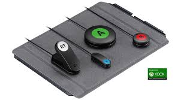

Logitech Adaptive Gaming Kit
Este kit complementa el control adaptativo de Xbox e incluye botones grandes y personalizables para usuarios con movilidad limitada.
Click aquí para comprarEste kit complementa el control adaptativo de Xbox e incluye botones grandes y personalizables para usuarios con movilidad limitada.
Click aquí para comprarDiseñado para gamers con movilidad reducida, este controlador ofrece múltiples entradas para conectar dispositivos adaptativos, permitiendo un esquema de control totalmente personalizado. Compatible con Xbox Series X|S, Xbox One y Windows, es un verdadero avance en inclusión.
Click aquí para comprarEl mando profesional de Sony para PS5 permite reasignar botones, ajustar la sensibilidad de los gatillos y guardar perfiles personalizados.
Click aquí para comprarEste dispositivo permite a los jugadores controlar el juego con el movimiento de los ojos, ideal para personas con movilidad muy reducida.
Click aquí para comprarUn dispositivo de accesibilidad diseñado para jugadores con movilidad reducida, altamente personalizable y compatible con múltiples plataformas.
© 2025 Level-Up Accesible. Todos los derechos reservados.